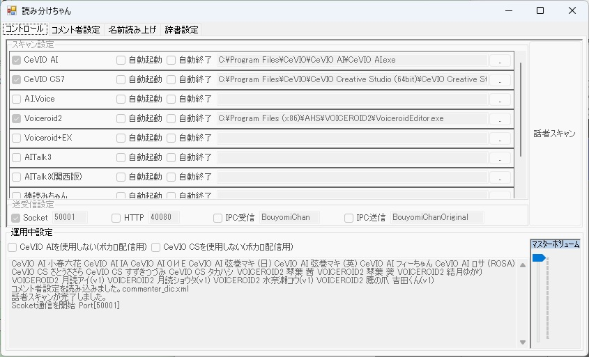
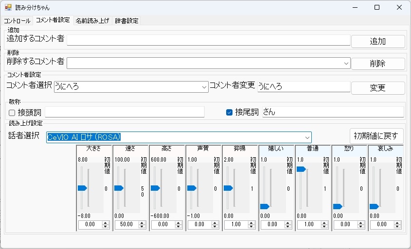

読み分けちゃん2 とは
配信に届いたコメントを、リスナーごとに違う声で読み分けて読み上げるツールです。
ツイキャス・YouTube のコメント取得に対応し、VOICEVOX（無料）などの音声合成エンジンと
連携して動きます。
前身の「読み分けちゃん」（v1）を 4 年間、実際の配信で使い込み、
リスナーさんの提案を取り込みながら全面的に作り直したのがこの v2 です
（開発の背景）。
2026-08-27、v2.10 を公開しました。
ツイキャス API 版・対応エンジン追加・タイムライン画面など、前回配布版からの追加機能は
v2.10 の更新内容をご覧ください。
アップデートされる方は、設定の引き継ぎについての注意もあわせてご確認ください。
あなたはどちらですか？
テスターの皆さんへのご案内は、2 つに分かれています。
ダウンロード（配信者の方）
インストーラは、このページと同じ GitHub リポジトリの Releases で配布しています。
最新版をダウンロード
yomiwakechan2-setup-v2.10.exe（約 62MB）／ Windows 10・11（64bit）
最新版 v2.10（2026-08-27 公開）／ v2.10 の更新内容
動作環境
- Windows 10 / 11（64bit）
- .NET 10 Desktop Runtime（未導入でもインストーラが自動で導入します）
- 音声合成エンジン：
- VOICEVOX（無料・お勧め） … https://voicevox.hiroshiba.jp/
多彩な声・お歌機能をフルに使うには VOICEVOX の導入をお勧めします（別途インストール・後からでも OK）
- COEIROINK / AivisSpeech（いずれも無料・v2.10 で対応）
- 棒読みちゃん（無料・v2.10 で対応）
- VOICEROID2 / CeVIO AI / VOICEPEAK（各製品のライセンスをお持ちの方のみ）
※ VOICEPEAK は配信のために新しく購入することはお勧めしません
（理由は更新内容の該当項をご覧ください）。すでにお持ちの方はお使いいただけます。
- 何も入れなくても、Windows 標準の音声（Haruka など）で最低限の読み上げは動きます
⚠ 初回起動時に Windows の警告（青い画面）が出ます
インストーラを実行すると「Windows によって PC が保護されました」という青い画面が
表示されます。これは本ソフトが電子署名を購入していないために出るもので、次の手順で進めてください。
- 青い画面の「詳細情報」をクリック
- 右下に現れる「実行」をクリック
同梱のコメント取得プログラム（feeder）の初回起動時にも、同様の警告や
ファイアウォールの確認が表示されることがあります。同じように許可して進めてください。
この手順で実行してよいのは、この公式配布ページから入手したファイルだけです。
ほかの場所で配布されているファイルは実行しないでください（本ソフトの再配布は禁止しています）。
v2.10 の更新内容
2026-08-27 公開／前回配布版 v2.00（2026-07-23）からの追加機能です。
⚠ アップデートされる方へ：v2.1 より前のアプリ設定は引き継がれません
v2.10 では、初回起動時に初期設定ウィザードで設定し直す方式になりました。
それまでのアプリ設定（接続先・表示・動作などの設定）は、自動でバックアップに退避されます
（消えるわけではありません）。
リスナー（コメント者）ごとのプロファイル・読み上げ辞書・歌フレーズ・実績は、
これまでどおり引き継がれます。育てた読み分けの設定はそのままです。
旧版（v2.00）への入れ戻しはしないでください。
新しい版で保存した設定ファイルを旧版に読ませると、リスナーごとの通算が壊れます。
- 🧭 初期設定ウィザードを追加初回起動時に、配信プラットフォーム（ツイキャス／YouTube）・
配信 ID・アクセストークン・読み上げスタイルを、画面の案内に沿って設定できます。
設定した内容は、あとから設定タブでいつでも変更できます
- 🔑 ツイキャスの「API 版」に対応（おすすめ）メンバー限定配信に対応し、テロップの更新や
コメント投稿ができます（X〔旧 Twitter〕連携はできません）。利用にはアクセストークンの設定が
必要で、ウィザードが取得の手順を案内します
- 🎫 メンバー限定配信のコメント取得メン限配信のコメントも読み上げられるようになりました
（ツイキャスの API 版を使っているときのみ）。従来の WS 版は、トークンなしで手軽に受信できる
かわりに、メン限・テロップ更新・コメント投稿には対応しません
- 🗣 対応する音声合成エンジンが増えましたAivisSpeech・COEIROINK・
棒読みちゃんに対応（いずれも無料）。従来の VOICEVOX / VOICEROID2 / CeVIO AI /
Windows 標準音声とあわせて、声の選択肢が広がりました
- 🎹 VOICEPEAK にも対応（ただし正直にお伝えします）お持ちの方は使えるようにしましたが、
1 回しゃべるたびに数秒の待ちが避けられません（VOICEPEAK 自体の作りによるもので、
こちらでは消せません）。キャッシュと先読みでできるだけ吸収しましたが、
それでも間延びすることがあります。配信のために新しく購入することはお勧めしません。
名前だけ VOICEPEAK・本文は別のエンジン、といった使い分けもできます
- ⚡ 読み上げが速くなりましたキャッシュ機構と先読み機構を追加し、音声合成の待ち時間を短縮。
コメントが届いてから声が出るまでのもたつきが減っています
- 🕒 タイムライン表示を軸とした画面に刷新起動後はタイムラインタブが開きます。
コメントが流れる帯の上で、いま読んでいるコメント・これから読むコメントがひと目で分かります
（受信の開始は同じタブの [一括起動して受信開始] から）
- 🎯 読みモードに「選択モード」を追加標準モード（おすすめ）は届いたコメントを上から順に
自動ですべて読み上げます。選択モードは自動では読まず、タイムラインから読みたいコメントを
選んで読み上げます。コメントの多い配信向けです（あとからいつでも切り替えられます）
💡 動作ログの記録について
不具合が起きたときに原因を調べられるよう、動作の記録（ログ）をお使いの PC の中に保存します。
ログが自動で外部に送信されることはありません。
不具合のご報告の際にログの提供をお願いすることがありますが、提供するかどうかはご自身の判断で構いません。
できること
- 🗣 声の読み分けリスナーごとに好きな声・話速・音程を割り当て。VOICEVOX / COEIROINK / AivisSpeech / 棒読みちゃん / VOICEROID2 / CeVIO AI / VOICEPEAK / Windows 標準音声に対応（VOICEVOX を入れれば 100 を超える声・スタイルから選べます）
- 📛 敬称と読み替え「〜さん」「〜ちゃん」などの敬称、名前の読み替え、読み上げ辞書
- ⚖ 優先度機構コメントが混み合ったら、大事なコメントから読む（優先度 1〜10）。混雑時は低優先を自動スキップ
- 💎 有料アイテムを見落とさない有料アイテムは混雑時も必ず読み上げ。履歴にも残るので後からの見返しも確実
- 📚 リスナーごとの累積リスナーごとに応援の累積を記録。「いつもの人」をちゃんと覚えている台帳
- 🎖 メンバーシップの把握メンバーシップ加入状況を取得して履歴に表示。メンバー限定配信の
コメント取得にも対応（ツイキャス API 版のみ・v2.10 で追加）
- 🎵 お歌機能（SONG）コメントに音符を書くとそのとおりに歌う。歌声テスト画面つき（記法ガイド）
- 🕒 タイムライン表示コメントが流れる帯の上で、いま読んでいるコメント・これから読む
コメントがひと目で分かる主画面（v2.10 で追加）
- 🎯 標準モード／選択モード自動ですべて読む「標準」と、読みたいコメントだけを選ぶ
「選択モード」を切り替え（v2.10 で追加）
- 🎛 一括起動音声エンジンとコメント取得をボタン一つでまとめて起動
- 🎤 マイク検出（OBS 連携）自分がマイクで話している間は読み上げを待たせて、声かぶりを防止
- 📜 履歴ウィンドウ読み上げ履歴を別ウィンドウ表示。罫線オフのフラット表示で OBS の配信画面にも載せられる
- ⏯ 一時停止・ピックアップ読み上げの一時停止、履歴からの読み直し・手動投入
- 🏷 声コマンド許可したリスナーは、コメント先頭のタグで自分の声を切り替えられる
- 👂 空耳モード英語ボイスに日本語をしゃべらせる遊び機能
- 🤝 コラボ配信対応コラボ相手の枠のコメントもまとめて取得・読み分け
v2 開発の背景
読み分けちゃんの初代（v1）は、作者自身のツイキャス配信のために生まれ、
4 年にわたって実際の配信で使われてきました。

初代（v1）のコントロール画面（画像はクリックで原寸表示）

初代（v1）のコメント者設定画面。ここから 4 年の実運用が始まった
v2 は、その 4 年間の実用経験と、配信に来てくれたリスナーさんたちの提案を
土台に、ゼロから設計し直したものです。
- 小さな配信でも、コメントの波は来る。常連さんが集まって一気にコメントが流れる瞬間に、
大事なコメントを取りこぼさないための優先度機構。
- 有料アイテムは絶対に見落とさない。混雑していても必ず読み、履歴に残す。
- リスナーごとに応援を累積。その場かぎりではなく、「これまでどれだけ応援してくれたか」を
覚えている台帳を中心に据えました。
- メンバーシップを把握。加入してくれた人がちゃんと分かるように。
- そして、遊びとしてのお歌機能。リスナーがコメントで歌わせて遊べる——
テスト配信では、リスナーさん発の歌い方の発明まで生まれています。
読み上げの「便利さ」だけでなく、配信者とリスナーの関係を覚えて、遇するためのツール。
それが読み分けちゃん2 です。
β 版としてのお願い
- 本ソフトは β 版です。不具合や、動作が発展途上の項目があります
（既知の発展途上項目）。気づいたことがあれば、ぜひ教えてください。
テスターの皆さんの報告が、そのまま正式版の品質になります。
- 使用期限について：β 版の機能を多く含むため、安全のための予防的措置として使用期限を
設定しています（古い版が使われ続けることを防ぐためのもので、機能制限が目的ではありません）。
使用期限はアップデートのたびに約 1 年延長される予定です。期限が近づいたら、
このページから新しいバージョンを入手してください。
- 再配布はしないでください。お知り合いに紹介いただけるときは、
この公式配布ページの URL（
https://github.com/mugonkun/yomiwakechan_v2）をお伝えください。
- 詳しい利用条件は、インストーラ表示の利用規約・同梱の license.txt をご覧ください。
連絡先・最新情報
謝辞
初代・読み分けちゃん（v1）を作っていたころ、音声合成ソフトを外部から扱うための技術情報について、
AssistantSeika 開発者の「努力したWiki」に協力を仰ぎ、情報を展開していただきました。
いまの読み分けちゃん2 の土台にある知見の一部は、ここに遡ります。
この場を借りて、深く感謝申し上げます。